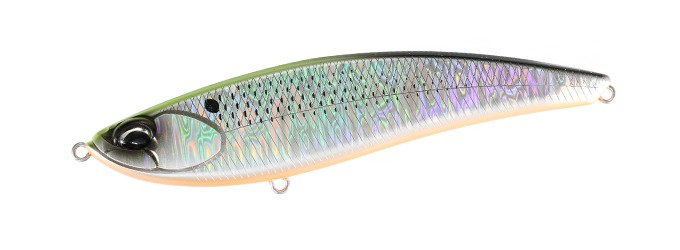
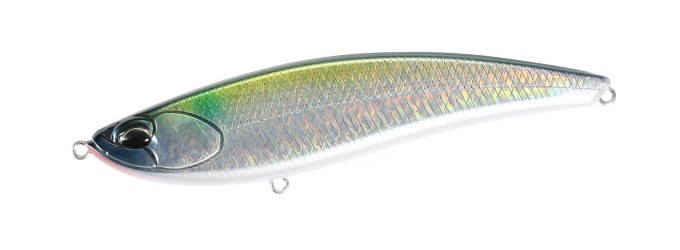
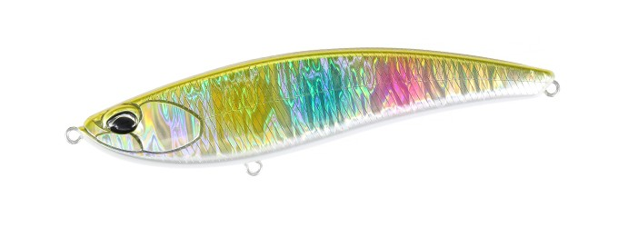
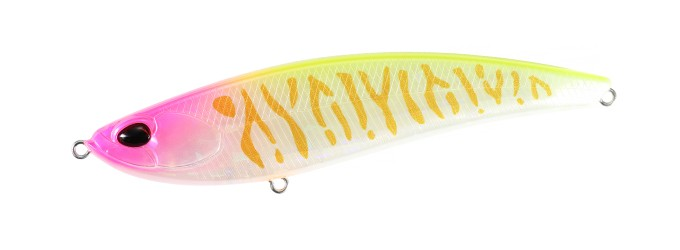

ベイルーフ バルク125F
（Bay RUF BULK 125F）
ベイルーフ バルク125FはDUO（デュオ）のフラットサイドリップレスミノーです。
高浮力ワイドボディのトルクフルな水押しとナチュラルなアクションをあわせ持つバルクに、さらにパワーを加えた125mmモデル。デッドスローでのナチュラルな誘いから、早巻きでの左右へのフラッタリングまで、多彩な演出でシーバスを誘います。

画像出典:DUO公式HP
スペック
- メーカー
- DUO（デュオ）
- タイプ
- リップレスミノー（重心移動・フローティング）
- 全長
- 125mm
- 自重
- 25g
- レンジ
- 0.1〜0.6m
- フック
- #3
- リング
- フックアイ#3.5
- ターゲット
- シーバス
- 価格
- 2,585円（税込）
▼今すぐチェック

バルク125Fの特徴
ナチュラルとハイアピールを1本で使い分けられる、125mmのリップレスミノー
-
トルクフルな水押しとナチュラルなアクション
高浮力ワイドボディの強い水押しによるアピール力と、ナチュラルなアクションをあわせ持っています。
-
速度で変わる多彩な演出
デッドスローではナチュラルな誘い、早巻きでは左右へのフラッタリングアクションと、巻き速度で見せ方を変えられます。
-
シャロー〜ミッドレンジに対応
レンジ0.1〜0.6mで、シャロー〜ミッドレンジの繊細な食わせの釣りから、トルクを生かしたパワーゲームまで対応します。
バルク125Fの使い方
基本はただ巻き。食わせたいときはデッドスローでナチュラルに、広く探りたいときや活性が高いときは早巻きでフラッタリングさせて、と巻き速度で使い分けます。
125mmのシルエットとワイドボディの水押しがあるので、コノシロなど大きめのベイトを食べている時期に特に出番が増えます。
バルク125Fの得意な状況
コノシロなど大きめのベイトを追っているシーバスを狙う場面。シャロー〜ミッドレンジを、繊細な食わせからパワーゲームまで状況に合わせて攻められます。
ワンポイント
ベイトが小さいときやプレッシャーが高いときは、同じバルクの95F（14g・レンジ0〜0.5m）にサイズを落とすと、同じ水押し系のアクションのまま食わせやすくなります。
バルクの使い分け
| モデル | 全長／自重 | 得意な場面 |
|---|---|---|
| バルク95F | 95mm／14g | レンジ0〜0.5m。コンパクトなサイズで違和感なく食わせる |
| バルク125F | 125mm／25g | レンジ0.1〜0.6m。シャロー〜ミッドレンジとパワーゲームに（本記事のモデル） |
どちらも高浮力ワイドボディのフラットサイドリップレスミノー。ベイトが小さいときやプレッシャーが高いときは95F、コノシロなど大きめのベイトや、少し深いレンジ・パワーゲームには125Fと使い分けましょう。
人気カラー
全15色の中から4色を紹介します。

CPA0898 サイトチャートコノシロチャートの背中で視認性を高めたコノシロ系。コノシロパターンに。

CYA0697 ギザードマレットコノシロ（ギザードシャッド）やボラを意識したナチュラル系。

CPA0608 ゴールドレインボーゴールドのフラッシングで存在感を出すカラー。濁りの入った河川に。

CLB0840 ピンクメロウタイガーピンク系のタイガー柄でアピールするカラー。濁りやローライトに。
画像出典:DUO公式HP
バルク125Fに似ているルアー
-
 ベイルーフ バルク95F
DUO
詳細はこちら＞
ベイルーフ バルク95F
DUO
詳細はこちら＞
同じバルクの95mm・14g。ベイトが小さいときや、プレッシャーが高いときに。
-
 カゲロウ124F
Megabass
詳細はこちら＞
カゲロウ124F
Megabass
詳細はこちら＞
全長124mm・自重22gのシャローランナー。同じ120mmクラスで、揺らぎアクションで見せたいときに。
-
 アイザー125F
ブルーブルー
詳細はこちら＞
アイザー125F
ブルーブルー
詳細はこちら＞
全長125mm・自重22gのシャローランナー。同じ125mmで、レンジ5〜30cmの浅いレンジを引きたいときに。